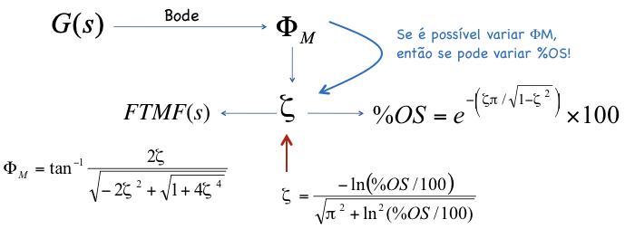
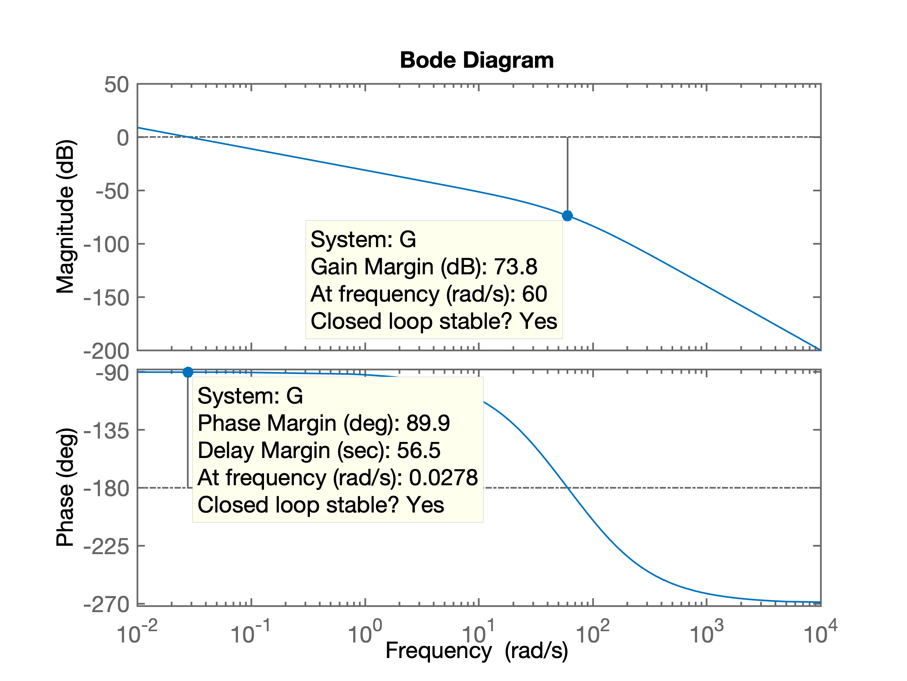
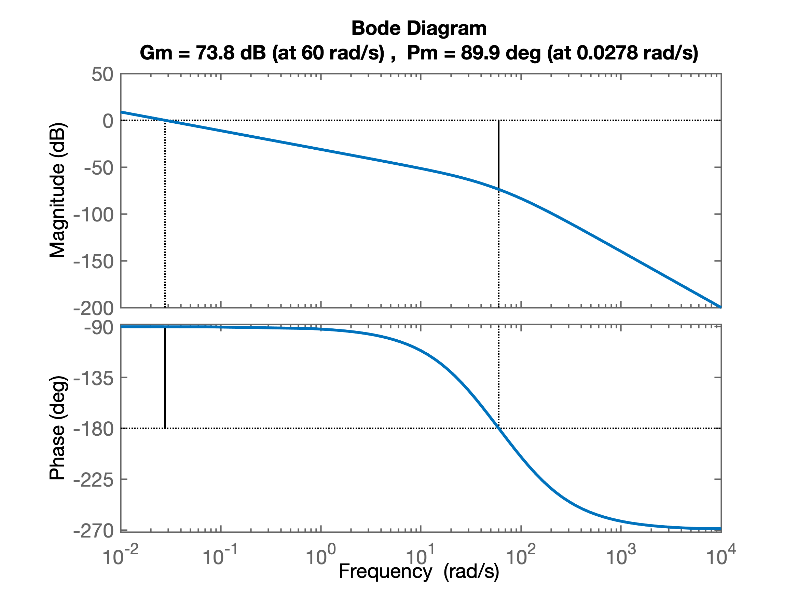
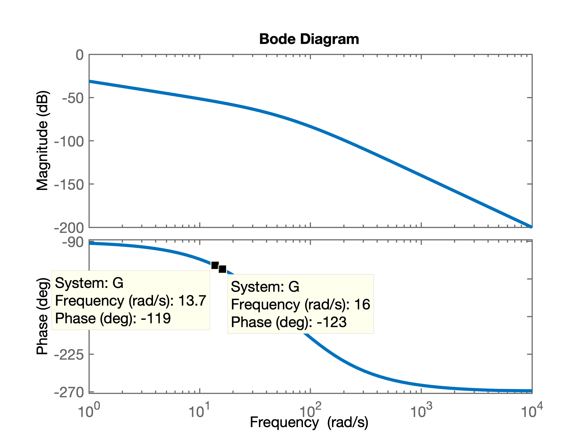
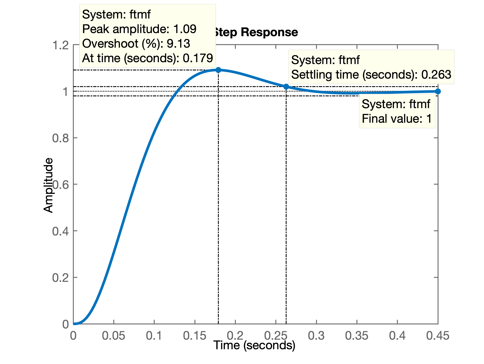

Usando técnica de resposta em frequencia (Diagrama de Bode).
Material recomendado:
Cap_10_Tecnicas_Resposta_Frecuencia_2a_parte.key(versão PDF).
Obs.: Este tipo de controlador permite atender no máximo ao \(\%OS\) especificado para o sistema em MF. A idéia pode ser resumida na figura:

Procedimento:
Matlab:>> OS=10; % exemplo
>> zeta=(-log(OS/100))/(sqrt(pi^2+(log(OS/100)^2)))
zeta =
0.5912
>> Pm):
\[
\Phi_M = \tan^{-1} \dfrac{ 2 \zeta}{ \sqrt{ -2 \zeta^2 + \sqrt{ 1 + 4 \zeta^4} } }
\]
ou no Matlab:>> Pm=atan2(2*zeta, sqrt(-2*zeta^2 + sqrt( 1+4*zeta^4) ) )
Pm =
1.0226
>> % Resposta em radianos!
>> Pm_deg=Pm*180/pi % convertendo para graus
Pm_deg =
58.5931
>>Identificar do Diagrama de Bode do sistema, a frequencia \(\omega_{\Phi_M}\) na qual, a margem de fase, \(\Phi_M\) seria igual à requerida.
Modificar o ganho do sitema (ajustar o valor de \(K\) do ccontrolador proporcional) de forma à que o ponto na qual a frequencia \(\omega_{\Phi_M}\) se transforme na margem de fase requerida para este sistema. Para tanto, neste ponto (frequencia = \(\omega_{\Phi_M}\)), o ganho final do sistema em MF (considerando o ganho \(K\)) deve ser igual à 1 (ou 0 dB).
Exemplo: Seja uma planta caracterizada pela função transferência: \[ G(s)=\dfrac{100}{s(s+36)(s+100)} \]
Suponha que se se deseja fechar a malha com controlador proporcional, garantido sobresinal maximo de 10%.
Note que este sistema em especial é do tipo 1 (possui 1 integrador: pólo na origem em \(s=0\)). Neste caso, o erro em regime permanente deste sistema, em malha fechada, para entrada degrau, sempre será nulo.
Continuando...
Entrando com dados no Matlab e levantando Diagrama de Bode deste sistema:
>> G=tf(100,poly([0 -36 -100]));
>> zpk(G) % verificando introdução correta dos dados
ans =
100
----------------
s (s+100) (s+36)
Continuous-time zero/pole/gain model.
>> bode(G)
>> O que rende o gráfico (Diagrama de Bode):

Podemos "coletar" os dados das margens de ganho e da fase usando a função margin(.) do Matlab, que neste caso rende:
>> margin(G)
>>Que gera um Diagrama de Bode ligeiramente modificado como o mostrado abaixo:

Mas no nosso caso, necessitamos descobrir em que frequencia ocorre a margem de fase requerida para o nosso sistema. Vamos supor que \(\%OS \le 10\%\), portanto, dos exemplos anteriores temos que é necessário uma margem de fase de: \(\Phi_M=58,5931^o\). Temos que buscar no Diagrama de Bode, em que frequencia ocorre este \(\Phi_M\):
>> 180-Pm_deg % descobrindo freq da margem da fase requerida
ans =
121.4069Buscamos no Diagrama de Bode, a frequencia onde o diagrama de Bode, parte da Fase, passe por \(121.4069^o\):

Notamos que a função bode(.) do Matlab varia a frequencia usando um passo determinado pelo seu algoritmo interno. Isto significa que não temos como descobrir com precisão a frequencia na qual o diagrama de fase está passando pelos \(121,4069^o\). O que podemos perceber pelo gráfico é que esta frequencia está dentro do intervalo: \(13,7 < \omega_{\Phi M} < 16\) (rad/s).
Supondo que esta frequencia seja: \(\omega_{\Phi M}=15\) (rad/s), encontramos que o ganho atual do sistema (sem considerar ainda o ganho \(K\)) é de -55,5 dB - ver figura à seguir.
Ocorre que para este ponto se transformar na nova margem da fase requerida para o sistema, o ganho final do sistema (em MF) deveria ser 1 (ou 0 dB), portanto, temos que "subir" (acrescentar) o ganho do sistema em 55,5 dB, ou:
\[ G|_{dB} = 20 \cdot \log_{10} G \quad \therefore \quad G = 10^{ \frac{G|_{dB}}{20}} \]
No matlab:
>> Gain=10^(-55.5/20) % Notar que a variável G já foi usada
Gain =
0.0017
>> 20*log10(Gain) % confirmando/verificando valor em dB
ans =
-55.5000
>> % ganho negativo significa que necessitamos acrescentar ganho
>> K=1/Gain
K =
595.6621
>> % ou em dB, resulta:
>> 20*log10(K)
ans =
55.5000
>> % o ganho positivo que devemos "acrescentar" ao sistemaFechando a malha com este valor de ganho, teremos:
>> ftmf=feedback(K*G, 1);
>> figure; step(ftmf)Que gera a figura:

A próxima figura resume o procedimento adotado:

Todo este procedimento pode ser "automatizado" na forma de um script para o Matlab.
Segue código fonte de ch11p1_fer.m:
% Nise, N.S.
% Control Systems Engineering, 3rd ed.
% John Wiley & Sons, New York, NY, 10158-0012
%
% Control Systems Engineering Toolbox Version 3.0
% Copyright � 2000 by John Wiley & Sons, Inc.
%
% Chapter 11: Design via Frequency Response
%
% (ch11p1) Example 11.1: We can design via gain adjustment on the Bode plot using
% MATLAB. You will input the desired percent overshoot from the keyboard. MATLAB
% will calculate the required phase margin and then search the Bode plot for that
% phase margin. The magnitude at the phase-margin frequency is the reciprocal of
% the required gain. MATLAB will then plot a step response for that gain. Let us
% look at Example 11.1 in the text.
%
% Atualizado por fpassold em 21.10.2019
disp('(ch11p1) Example 11.1 - Controlador Proporcional') % Display label.
%% ---- Entre com a função transferência da planta no bloco abaixo
%
numg=[100]; % Define numerator of G(s).
deng=poly([0 -36 -100]); % Define denominator of G(s).
G=tf(numg,deng) % Create and display G(s).
%% Seguem cálculos associados com o projeto
pos=input('Input %OS ?: '); % Input desired percent overshoot.
z=(-log(pos/100))/(sqrt(pi^2+log(pos/100)^2));
% Calculate required damping ratio.
fprintf('\nRequired damping ratio (zeta): %6.4f\n', z)
Pm=atan(2*z/(sqrt(-2*z^2+sqrt(1+4*z^4))))*(180/pi);
% Calculate required phase margin.
fprintf('Required phase margin, Pm = %7.4f\n', Pm)
%% Criando vetores associados com Diagrama de Bode
w=0.1:0.01:100; % Set range of frequency from 0.01 to
% 1000 in steps of 0.01.
[Mag,P]=bode(numg,deng,w); % Gets Bode data.
figure; % Plot Bode diagram
subplot(2,1,1)
h1 = semilogx(w, 20.*log10(Mag)); % h1: current figure handle
fig1 = gcf; % current figure handle
grid
title('Open Loop Freq. Response')
ylabel('Magnitude (dB)');
%% ajustando propriedades da figura
set(h1,'LineWidth', 2);
ax = gca; % current axes
ax.FontSize = 14;
subplot(2,1,2) % Diagrama de fase
h2 = semilogx(w, P);
grid
ylabel('Phase (deg)')
xlabel('Frequency (rad/sec)')
%% ajustando propriedades da figura
set(h2,'LineWidth', 2);
ax = gca; % current axes
ax.FontSize = 14;
escY=min(P);
Ph=-180+Pm; % Calculate required phase angle.
fprintf('Required phase angle: %7.2f^o\n', Ph)
u=length(P);
for k=1:1:u; % Search Bode data for required phase
% angle.
if P(k)-Ph<=0; % If required phase angle is found,
% find the value of
M=Mag(k); % magnitude at the same frequency.
fprintf('Found Pm at w = %5.2f (rad/s)\n', w(k))
fprintf('with magnitude = %5.2f dB (%5.2g)\n', 20*log10(M), M)
new_K=1/M; % Calculate the required gain.
subplot(2,1,2)
hold on
% Marca no diagrama o ponto onde ocorre a Margem de Fase, Pm
semilogx([w(1) w(u)], [-180 -180], 'k-.', 'LineWidth', 2) % linha guia -180o
semilogx([w(k) w(k)], [-180 Ph], 'm-', 'LineWidth', 6) % mostra Pm
aux=[num2str(Pm,'%4.1f') '^o'];
aux2=-180+Pm/2;
text((w(k)), aux2, aux, 'FontSize',14)
semilogx([w(k) w(k)], [Ph 0], 'm--', 'LineWidth', 2)
semilogx([w(1) w(u)], [P(k) P(k)], 'm--', 'LineWidth', 2)
aux=[num2str(w(k),'%3.2f') ' rad/s'];
text((w(k)),0 , aux, 'FontSize',14)
subplot(2,1,1)
hold on
% Marca no diagrama do ganho, os pontos que correspondem à Pm
semilogx([w(k) w(k)], [0 20.*log10(Mag(k))], 'm-', 'LineWidth',6) % Mostra altura ajuste do ganho
semilogx([w(k) w(k)], [20.*log10(Mag(k)) 20.*log10(Mag(u))], 'm--', 'LineWidth',2)
semilogx([w(1) w(u)], [20.*log10(Mag(k)) 20.*log10(Mag(k))], 'm--', 'LineWidth',2)
aux=[num2str(-20*log10(M),'%5.2f') ' dB'];
aux2=20.*log10(Mag(k))/2;
text((w(k)), aux2, aux , 'FontSize',14)
break % Stop the loop.
end % End if.
end % End for.
fprintf('Then, required K = %6.2f\n', new_K)
k_final=new_K;
fprintf('Then, final required K = %6.2f\n', k_final)
T=feedback(k_final*G,1); % Find T(s) using the calculated K.
figure; step(T); % Generate a step response.
title(['Closed-Loop Step Response for K= ',num2str(k_final)]) % Add title to step response.
ax = gca; % current axes
ax.FontSize = 14;
%% verificando diagrama de Bode compensado
adjusted_g=k_final*G;
figure; bode(G,adjusted_g)
hold on; % sobrepondo dados de margens
margin(adjusted_g)O script ch11p1_fer.m automatiza o processo, usando a função [M,P]=bode(G,w) para estocar valores de ganho e fase do diagrama de Bode para este sistema, \(G\), nos vetores \(M\) e \(P\), em função dos valores de frequencia passados via vetor \(w\) (que variou entre \(0,01 \le \omega \le 1000\) rad/s, com passo de 0,01 rad/s). Então se calcula o ângulo de fase pelo qual deve passar a planta para alcançarmos a margem de fase desejada, na linha: Ph = -180+Pm, onde Pm corresponde à margem de fase desejada, ou \(\Phi_M\). Depois, um laço for percorre os valores do vetor de fase P buscando a frequencia onde teríamos a marge da fase caso o ganho do sistema fosse igual à 1 ou 0 dB, via teste: if P(k)-Ph <= 0. Quando este ponto é encontrado, o valor do ganho é estocado na variável M e a compensação de ganho requerrida é calculada na variável K, K=1/M. Notar que tanto o vetor M quanto a variável M guardam valores de ganho absolutos e não na escala de dB. A declaração break dentro do if anterior, "quebra" o laço for que varria as frequencias. O restante são cálculos fechando a malha e realizando o teste.
Note que a função transferência desta planta incluia um integrador. Isto significa que o procedimento para projeto de Controlador com Ação Integrativa Pura segue o mesmo procedimento já mostrado anteriormente.